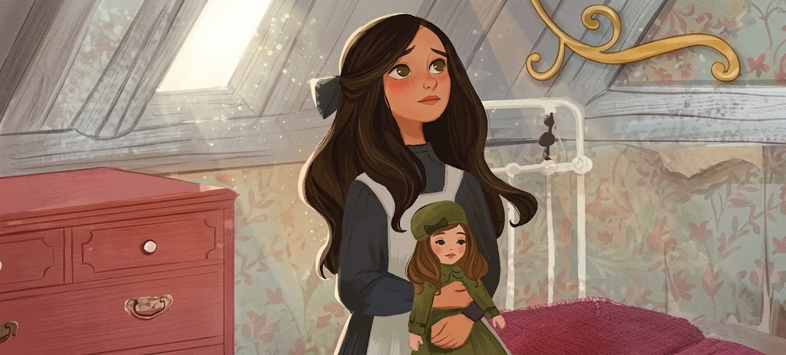

Once Upon a Page
Once Upon a Page

A Little Princess
A rich girl at a boarding school loses everything but keeps her kindness.
Sara Arrives

Once on a dark winter's day, when the yellow fog hung so thick and heavy in the streets of London that the lamps were lighted and the shop windows blazed with gas as they do at night, an odd-looking little girl sat in a cab with her father and was driven rather slowly through the big thoroughfares.
She sat with her feet tucked under her, and leaned against her father, who held her in his arm, as she stared out of the window at the passing people with a queer old-fashioned thoughtfulness in her big eyes.
She was such a little girl that one did not expect to see such a look on her small face. It would have been an old look for a child of twelve, and Sara Crewe was only seven. The fact was, however, that she was always dreaming and thinking odd things and could not herself remember any time when she had not been thinking things about grown-up people and the world they belonged to. She felt as if she had lived a long, long time.
At this moment she was remembering the voyage she had just made from Bombay with her father, Captain Crewe. She was thinking of the big ship, of the Lascars passing silently to and fro on it, of the children playing about on the hot deck, and of some young officers' wives who used to try to make her talk to them and laugh at the things she said.
Principally, she was thinking of what a queer thing it was that at one time one was in India in the blazing sun, and then in the middle of the ocean, and then driving in a strange vehicle through strange streets where the day was as dark as the night. She found this so puzzling that she moved closer to her father.
"Papa," she said in a low, mysterious little voice which was almost a whisper, "papa."
"What is it, darling?" Captain Crewe answered, holding her closer and looking down into her face. "What is Sara thinking of?"
"Is this the place?" Sara whispered, cuddling still closer to him. "Is it, papa?"
"Yes, little Sara, it is. We have reached it at last." And though she was only seven years old, she knew that he felt sad when he said it.
It seemed to her many years since he had begun to prepare her mind for "the place," as she always called it. Her mother had died when she was born, so she had never known or missed her. Her young, handsome, rich, petting father seemed to be the only relation she had in the world. They had always played together and been fond of each other. She only knew he was rich because she had heard people say so when they thought she was not listening, and she had also heard them say that when she grew up she would be rich, too. She did not know all that being rich meant. She had always lived in a beautiful bungalow, and had been used to seeing many servants who made salaams to her and called her "Missee Sahib," and gave her her own way in everything. She had had toys and pets and an ayah who worshipped her, and she had gradually learned that people who were rich had these things. That, however, was all she knew about it.
During her short life only one thing had troubled her, and that thing was "the place" she was to be taken to some day. The climate of India was very bad for children, and as soon as possible they were sent away from it—generally to England and to school. She had seen other children go away, and had heard their fathers and mothers talk about the letters they received from them. She had known that she would be obliged to go also, and though sometimes her father's stories of the voyage and the new country had attracted her, she had been troubled by the thought that he could not stay with her.
"Couldn't you go to that place with me, papa?" she had asked when she was five years old. "Couldn't you go to school, too? I would help you with your lessons."
"But you will not have to stay for a very long time, little Sara," he had always said. "You will go to a nice house where there will be a lot of little girls, and you will play together, and I will send you plenty of books, and you will grow so fast that it will seem scarcely a year before you are big enough and clever enough to come back and take care of papa."
She had liked to think of that. To keep the house for her father; to ride with him, and sit at the head of his table when he had dinner parties; to talk to him and read his books—that would be what she would like most in the world, and if one must go away to "the place" in England to attain it, she must make up her mind to go. She did not care very much for other little girls, but if she had plenty of books she could console herself. She liked books more than anything else, and was, in fact, always inventing stories of beautiful things and telling them to herself. Sometimes she had told them to her father, and he had liked them as much as she did.
"Well, papa," she said softly, "if we are here I suppose we must be resigned."
He laughed at her old-fashioned speech and kissed her. He was really not at all resigned himself, though he knew he must keep that a secret. His quaint little Sara had been a great companion to him, and he felt he should be a lonely fellow when, on his return to India, he went into his bungalow knowing he need not expect to see the small figure in its white frock come forward to meet him. So he held her very closely in his arms as the cab rolled into the big, dull square in which stood the house which was their destination.